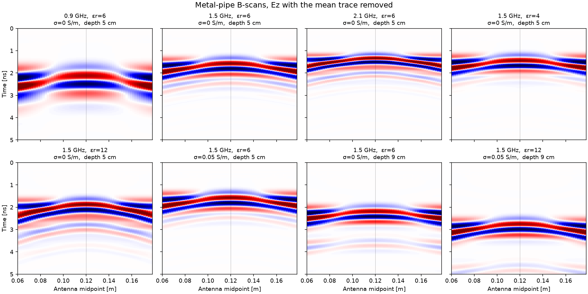
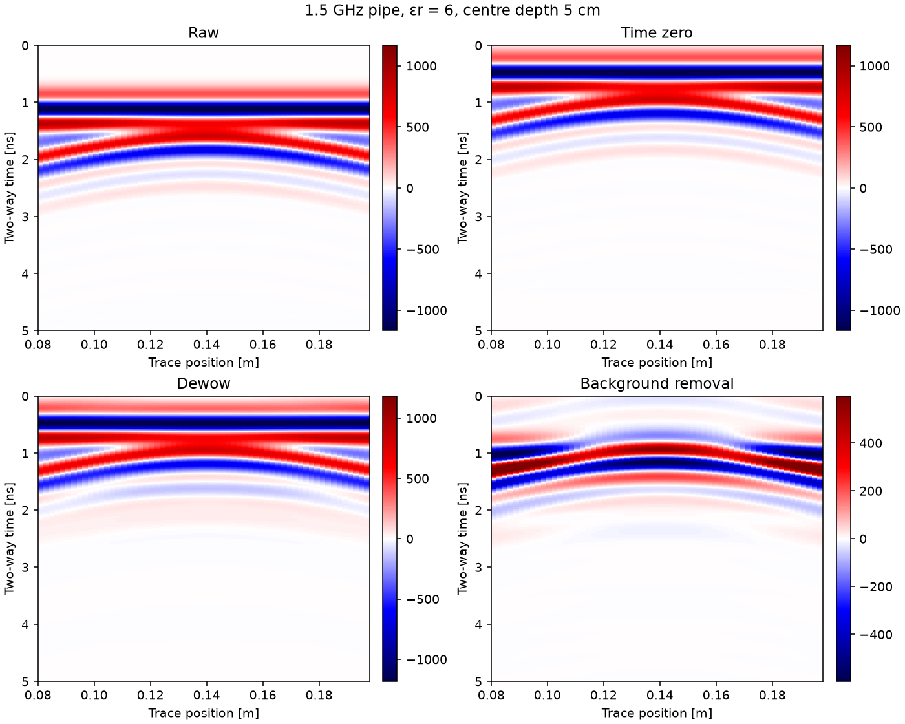
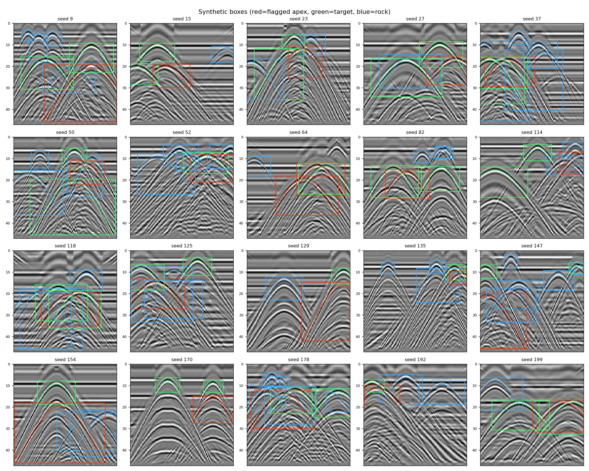
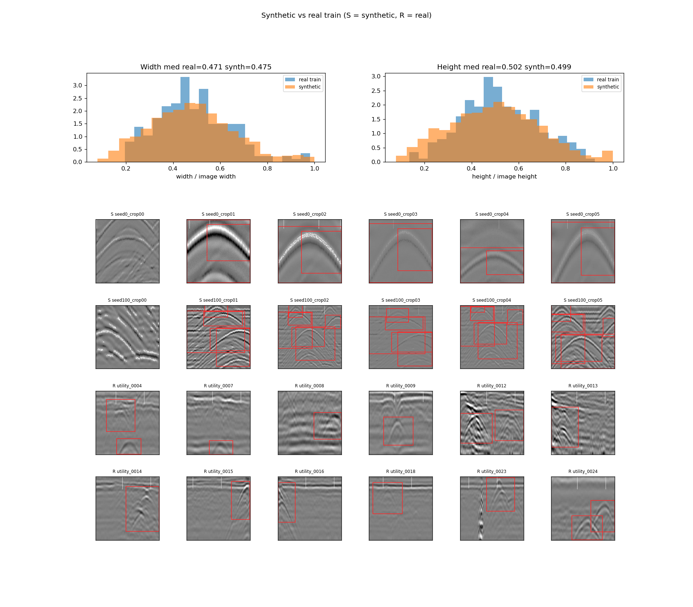
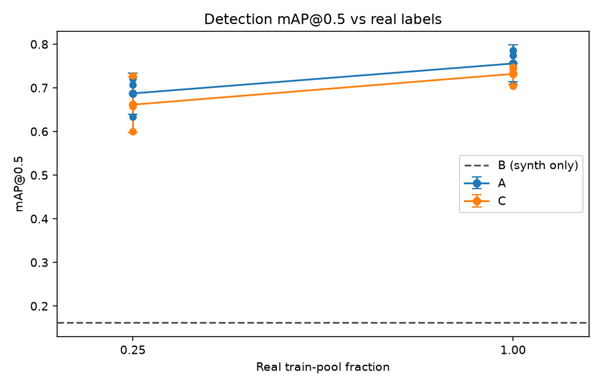
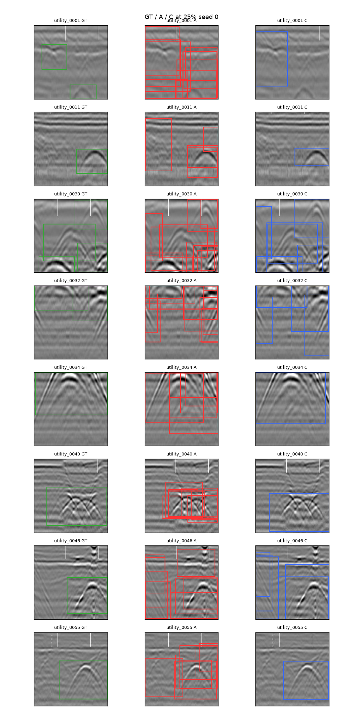

Institute for Geoinformatics, University of Münster, Germany
Technical note · November 2026 · Code: github.com/hectorvh/GPRadar
Ground-penetrating radar (GPR) is widely used to locate buried utilities, but deep-learning detectors for GPR data are limited by the small number of labelled field scans. This note tests whether B-scans simulated with gprMax, which carry labels derived from their known geometry, improve the detection of hyperbolic reflections on real B-scans. A YOLO11n detector is trained under three regimes (real data only, synthetic data only, and synthetic pre-training followed by real fine-tuning) at 25 and 100 % of the available real labels, and evaluated on a locked held-out set of 83 real B-scans from an open utilities-and-voids dataset. Synthetic pre-training did not improve over real-only training: at 25 % of real labels, mAP@0.5 was 0.687 (A) versus 0.661 (C); at 100 % it was 0.756 versus 0.732. The best locked-test model is regime A at 100 % real labels, seed 2 (mAP@0.5 = 0.786).
Keywords: ground-penetrating radar; gprMax; synthetic data; transfer learning; object detection; buried utilities
GPR sends short electromagnetic pulses into the ground and records the reflections at each antenna position. When the antenna crosses a small buried object such as a pipe, the two-way travel time first decreases and then increases, so the object appears in the B-scan (a profile of traces against position) as a hyperbola. For an object at horizontal position x0 and depth d, in soil with relative permittivity εr, the travel time at antenna position x is
Finding these hyperbolas is the first step of utility mapping, and it is still often done by eye. Convolutional detectors can automate it, but they need many labelled B-scans, and field data are expensive to collect and slow to label. Most open GPR datasets are small, come as images rather than raw traces, and cover few soil types and antennas. Numerical simulation offers labels for free, because the position and depth of every target are known. The open question is whether simulated scans are realistic enough to help a detector that will be used on real data (the sim-to-real gap).
The main objective is to measure how much synthetic pre-training improves hyperbola detection on real B-scans when real labels are scarce. In detail:
Research question. At 25 and 100 % of the available real labels, how does a detector trained on real data only compare with one pre-trained on synthetic data and fine-tuned on real data?
Scenes are 2D gprMax models (Warren et al., 2016) with a 400 MHz source. Each scene draws, from a fixed seed, a layered soil, one to three targets (metal pipe, PVC pipe or air-filled void) with random depth and radius, and small rocks as clutter. Labels are computed from the geometry: the apex time follows from Eq. (1) with x = x0, and the box from the kink-fixed hyperbola plus a capped ringing extension. Rocks are labelled when their reflection coefficient against the host band is at least 0.03. Realism augmentation (noise, gain, jitter, histogram matching) is applied before JPEG. From 200 scenes, 1166 crops of 224×224 were written (1051 train / 115 val by scene).
Real B-scans come from the open Mendeley dataset of subsurface utilities and voids (Mojahid et al., 2025). The working set is the 285 originals (void, utility, intact). Hyperbolas were labelled by hand (YOLO class 0); intact images have no boxes. Near-duplicates share a group_id. The locked split is train 202 / test 83; from the train split, 20 % of groups form validation (46 images) and the rest is the train pool (156 images, 177 boxes). The test set was fixed before any training and is never used for training or model selection.
Simulated traces go through time-zero correction, dewow, background removal (mean-trace subtraction), band-pass filtering and gain, implemented in NumPy/SciPy and checked against GPRPy on the same profiles. The real data are only available as images, so they receive only resizing and intensity normalisation; this asymmetry is itself part of the sim-to-real gap.
One detector family (YOLO11n, Ultralytics 8.4.204) is trained under three regimes: A, real data only from the COCO checkpoint; B, synthetic data only (stage 1); C, synthetic pre-training then fine-tuning on real data. Regimes A and C use 25 and 100 % of the real train pool; B is the three stage-1 seeds. Image size 224, batch 16, three seeds (0, 1, 2). Metrics on the locked real test set are mAP@0.5, precision, recall and false positives per image (confidence 0.25, IoU ≥ 0.5). The shipping candidate is chosen from A_f100 versus C_f100 by locked-test mAP@0.5, then the best seed within that setup.
Figure 1 shows how the hyperbola responds to the model parameters. Deeper targets give later and flatter hyperbolas; higher permittivity slows the wave, which delays the apex and narrows the arms; conductivity attenuates the signal, so the arms fade with offset. These patterns agree with Eq. (1) and confirm that the simulations behave as expected before they are used for training.

figures/pipe_bscan_variants.png'">
figures/preprocessing_steps_sim.png'">
figures/synthetic_boxes_check.png'">
figures/synthetic_vs_real.png'">| Split | Source | Images | Boxes | Labels |
|---|---|---|---|---|
| Synthetic train / val | gprMax, 400 MHz | 1051 / 115 | 2688 / 260 | From geometry |
| Real train pool / val | Mendeley originals | 156 / 46 | 177 / 45 | Manual |
| Real test (locked) | Mendeley originals | 83 | 93 | Manual |
Table 2 and Figure 5 give the main result. Regime A (real only) was ahead of regime C at both label fractions: at 25 % of the train pool, mAP@0.5 was 0.687 ± 0.047 (A) versus 0.661 ± 0.064 (C); at 100 % it was 0.756 ± 0.042 versus 0.732 ± 0.024. The mean C − A difference was −0.026 at 25 % (95 % bootstrap interval over test images [−0.090, 0.056]) and −0.024 at 100 % ([−0.055, 0.042]). Regime B (synthetic only) reached only 0.161 ± 0.051, which shows the size of the sim-to-real gap. Among A_f100 and C_f100 on the locked test set, A_f100_seed2 is the best weight (mAP@0.5 = 0.786, mAP@0.5:0.95 = 0.438).
| Regime | Real labels | mAP@0.5 | Precision | Recall | FP / img |
|---|---|---|---|---|---|
| B | 0 % | 0.161 ± 0.051 | 0.321 | 0.251 | 0.59 |
| A | 25 % | 0.687 ± 0.047 | 0.436 | 0.717 | 1.73 |
| C | 25 % | 0.661 ± 0.064 | 0.478 | 0.685 | 0.90 |
| A | 100 % | 0.756 ± 0.042 | 0.601 | 0.720 | 0.55 |
| C | 100 % | 0.732 ± 0.024 | 0.562 | 0.713 | 0.63 |

figures/detection_results.png'">
figures/detection_examples.png'">Comparing A_f100 and C_f100 on the locked test set, regime A is better on mean mAP@0.5 (0.756 vs 0.732). Within A_f100, seed 2 is best (mAP@0.5 = 0.786, mAP@0.5:0.95 = 0.438; precision 0.644, recall 0.720, 0.45 FP/image). That weight is runs/detect/A_f100_seed2/weights/best.pt. For reference, best validation mAP50-95 among the same six runs (from each run's results.csv) was A_f100_seed0; the locked test set prefers seed 2, which is what we ship.
In this setup, synthetic pre-training did not beat real-only training at either 25 or 100 % of the real train pool. The C − A intervals both cover zero, so the small negative mean differences are not a clear win for C. Regime B alone is far behind, so the synthetic distribution still helps as a pre-train signal in absolute terms (C ≫ B) but does not beat starting from COCO and fine-tuning on real labels (A).
Three differences between the two data streams likely limit the transfer. First, the simulations are 2D, so they lack out-of-plane energy and the 3D shape of real pipes and voids. Second, the real data are processed images from an unknown chain, while the synthetic data come from raw traces processed by our own code; contrast, gain and grey histogram therefore differ even after matching. Third, real soils contain roots, moisture gradients and rubble that the random rocks only roughly imitate, and synthetic crops are more crowded (median about three boxes) than real images (about one to two).
Limitations. One open dataset from one region; images instead of raw traces, so migration and consistent preprocessing could not be applied to real data; a single detector family (YOLO11n) at 224 px; manual labels from one annotator; a small real test set (83 images), so differences of a few mAP points may not be significant; only 25 and 100 % label fractions were run.